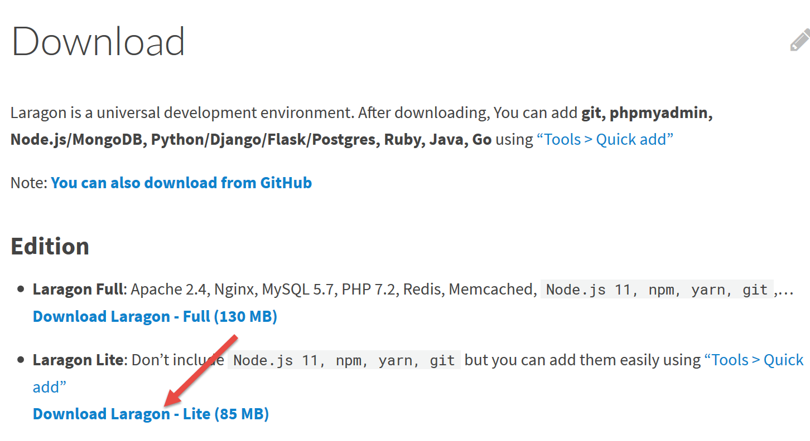
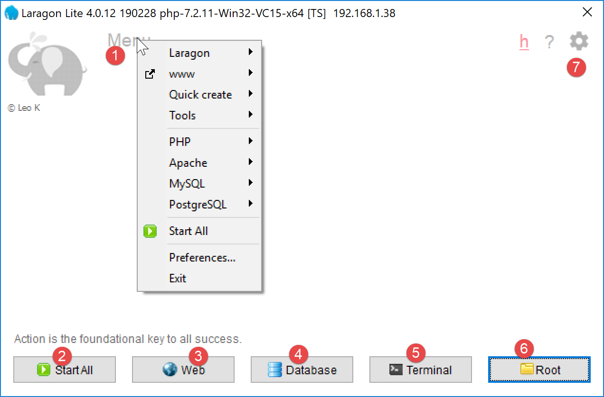

2. 工作环境的安装
这些脚本是在以下环境中编写和测试的：
- 名为 Laragon 的 Apache / SGBD MySQL / PHP 7.3 网页服务器环境；
- NetBeans 10.0开发环境（IDE）；
2.1. Laragon的安装
Laragon 是一个集成了多款软件的软件包：
- Apache Web 服务器。我们将使用它来编写 PHP 格式的 Web 脚本；
- SGBD MySQL；
- PHP脚本语言；
- 一个为 Web 应用程序实现缓存的 Redis 服务器：
Laragon 可于 2019 年 3 月从以下地址下载：



- 安装 [1-5] 后将生成以下目录结构：

- 在 [6] 中包含 PHP 的安装文件夹；
运行 [Laragon] 后将显示以下窗口：

- [1]：Laragon的主菜单；
- [2]：[Start All]按钮启动Apache Web服务器，以及SGBD和MySQL；
- [3]： [WEB] 按钮显示网页 [http://localhost]，该网页对应文件 PHP [<laragon>/www/index.php]，其中 <laragon> 是 Laragon 的安装目录；
- [4]：[Database]按钮可通过[phpMyAdmin]工具管理SGBD和MySQL。 需先安装该工具；
- [5]：[Terminal] 按钮将打开一个命令终端；
- [6]：点击 [Root] 按钮将打开 Windows 资源管理器，并定位到 [<laragon>/www] 文件夹，该文件夹是 [http://localhost] 网站的根目录。 所有由 Laragon 的 Apache 服务器管理的 Web 应用程序都应放置在此处；
现在打开一个 Laragon 终端 [5]：

- 在 [1] 中，终端类型。[6] 中提供三种终端类型；
- 在 [2, 3] 中：当前目录；
- 在 [4] 中，输入命令 [echo %PATH%]，即可显示在搜索可执行文件时所遍历的文件夹列表。 Laragon的所有主要文件夹都包含在该可执行文件路径中，而如果在Windows中打开一个[cmd]命令窗口，则不会包含这些文件夹。在本文档中，当需要输入命令来安装某款软件时，这些命令通常是在Laragon终端中输入的；
2.2. 安装 IDE NetBeans 10.0
NetBeans 10.0 可从以下地址下载（2019年3月）：
https://netbeans.apache.org/download/index.HTML

下载的文件为 ZIP 压缩包，只需解压即可。安装并启动 NetBeans 后，即可创建首个 PHP 项目。

- 在 [1] 中，选择“文件 / 新建项目”选项；
- 在 [2] 中，选择类别 [PHP]；
- 在 [3] 中，选择项目类型 [PHP Application]；

- 在 [4] 中，为项目命名；
- 在 [5] 中，为项目选择一个文件夹；
- 在 [6] 中，选择已下载的 PHP 版本；
- 在 [7] 中，为 PHP 文件选择 UTF-8 编码；
- 在 [8] 中，选择 [Script] 模式以在命令行模式下执行 PHP 脚本。 选择 [Local WEB Server] 以在 Web 环境中执行脚本 PHP；
- 在 [9,10] 中，指定 Laragon 软件包中 PHP 解释器的安装目录：

- 选择 [Finish] 以完成 PHP 项目创建向导；

- 在 [11] 中，项目已通过脚本 [index.php] 创建；
- 在 [12] 中，编写一个简化的脚本 PHP；
- 在 [13] 中，执行 [index.php]；

- 在 [14] 中，将结果输出到 NetBeans 的 [output] 窗口中；
- 在 [15] 中，创建一个新脚本；
- 在 [16] 中，显示新脚本；
读者可以在同一项目 PHP 的不同文件夹中创建后续的所有脚本。本文档中脚本的源代码以以下 NetBeans 目录结构提供：

本文档中的脚本位于项目目录 [scripts-console] [1] 中。 我们还将使用 PHP 库，这些库将放置在 [<laragon-lite>/www/vendor] [2] 文件夹中，其中 <laragon-lite> 是 Laragon 软件的安装目录。 为了让 NetBeans 识别 [2] 库属于 [scripts-console] 项目， 我们需要将文件夹 [vendor] [2] 包含在项目分支 [Include Path] [3] 中。 我们将配置 NetBeans，使文件夹 [<laragon-lite>/www/vendor] [2] 被包含在所有新项目 PHP 中，而不仅仅是在项目 [scripts-console] 中：

- 在 [1-2] 中，进入 NetBeans 选项；
- 在 [3-4] 中，配置 PHP 的选项；
- 在 [5-7] 中，配置 PHP 的 [Global Include Path]： [7]中指定的文件夹会自动包含在任何PHP项目的[Include Path]中；

- 在 [9] 中，可访问 [Include Path] 分支的属性；
- 在 [10-11] 中，NetBeans 会扫描这些库中的新库。NetBeans 会扫描这些库中的 PHP 代码，并记录其类、接口、函数等，以便为开发人员提供帮助；

- 在 [12] 中，一段代码使用了 [vendor/php-mime-mail-parser] 库中的 [PhpMimeMailParser\Parser] 类；
- 在 [13] 中，NetBeans 会提供该类的各种方法；
- 在 [14-15] 中，NetBeans 会显示所选方法的文档；
此处的[Include Path]概念是NetBeans特有的。PHP也包含该概念，但两者原则上属于不同的概念。
现在工作环境已安装完毕，我们可以开始学习 PHP 的基础知识。